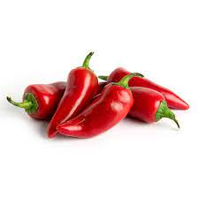

מְלָפְפוֹן הוא צמח מטפס חד-שנתי קיצי ממשפחת הדלועיים, בסוג מלפפון. המלפפון אינו
דורש השקיה מרובה, ופריו
המוארך עסיסי ועשיר מאוד במים. צבעו ירוק. אוכלים אותו חי, כבוש במלח, או מוחמץ. מוצאו של הצמח בהודו, שם החלו
בני אדם לגדל אותו לפני כ-3,000 שנה.
מחיר לקילו 12 ש"ח

עגבנייה היא צמח ממשפחת הסולניים. צבע הפרי שלו הוא לרוב אדום, אם כי ישנם זנים
צהובים, לבנים, ירוקים, כתומים
ואף סגולים. העגבנייה היא אחד הגידולים החשובים בחקלאות. בתחום הקולינריה, פירות העגבנייה מסווגים כירקות,
הנצרכים בכמויות גדולות ונאכלים טריים וכמרכיב בתבשילים רבים וכן בתעשיית שימורי רסק העגבניות.
מחיר לקילו 10 ש"ח

פלפל הוא שם כללי למגוון פירות אכילים של צמחים מסוג פלפלת, מהמין Capsicum annuum.
מבחינה קולינרית, נחשב הפלפל
כירק.
מחיר לקילו 11 ש"ח